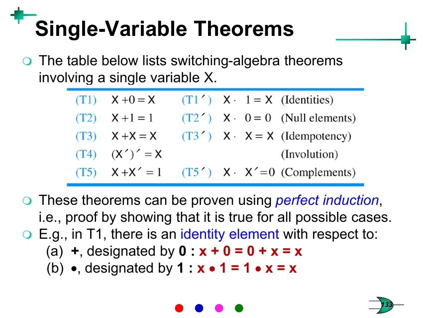

Week 4 — Boolean Algebra
Lecture: "Combinational Logic Principles" (slides 128–165) · Tutorial 4
This page interleaves each idea with the question that tests it — learn a small piece, then use it immediately. Prefer one long read top-to-bottom instead? → Classic layout
Why this topic exists
Weeks 1–3 gave you ways to build circuits. This week gives you the algebra to manipulate the Boolean expressions those circuits implement — so you can prove two different-looking circuits are secretly identical, or simplify a messy expression into one that needs far fewer gates. This is the "pure maths" week of the course, and everything in Week 5 (Karnaugh Maps) is really just a visual shortcut for doing the algebra you learn here.
Axioms: the bedrock rules
An axiom is a rule assumed true, not proved — everything else in the system is built on top of it. Switching algebra has axioms for what a binary variable is (it's 0 or 1, never anything else, and its complement is always the other one), and formal definitions of AND/OR at every possible input combination (0·0=0, 1·1=1, 0·1=1·0=0, and their OR mirror-images). This looks trivial written out, but it's the formal foundation that lets you *prove* every other law by "perfect induction" — literally just checking all 2n cases.
The theorems — grouped by what they actually do for you

| T1 (Identities) | X+0=X, X·1=X — adding 0 or multiplying by 1 changes nothing, exactly like ordinary arithmetic. |
|---|---|
| T2 (Null elements) | X+1=1, X·0=0 — OR-ing with 1 always wins (forces 1); AND-ing with 0 always wins (forces 0). No ordinary-arithmetic equivalent — this is genuinely Boolean-specific. |
| T3 (Idempotency) | X+X=X, X·X=X — repeating the same variable changes nothing. (Never true in ordinary arithmetic — 2+2≠2 — so this one has no "normal maths" intuition to lean on; just memorise it.) |
| T4 (Involution) | (X')'=X — complementing twice gets you back to where you started. Same as a double-negative in English ("not not happy" = happy). |
| T5 (Complements) | X+X'=1, X·X'=0 — a variable and its opposite always cover every case (OR=1) and never overlap (AND=0). |
| T6/T6′ Commutative | X+Y=Y+X, XY=YX — order doesn't matter, same as ordinary + and ×. |
|---|---|
| T7/T7′ Associative | Grouping doesn't matter: (X+Y)+Z = X+(Y+Z). Same as ordinary maths. |
| T8/T8′ Distributive | X(Y+Z)=XY+XZ (identical to ordinary algebra) — and also its mirror-image X+(YZ)=(X+Y)(X+Z), which has no equivalent in ordinary arithmetic (2+(3×4) ≠ (2+3)(2+4)!). This second form is uniquely Boolean and extremely useful for building product-of-sums expressions. |
| T9/T9′ Absorption | X+XY=X, and X(X+Y)=X — a longer term gets "swallowed" by a shorter one that already covers it. Useful for spotting redundant terms. |
| T10/T10′ Combining | XY+XY′=X — Y and its complement cancel out once they're both multiplied by the same X, leaving just X. This is the single most-used simplification trick in the whole course (Tutorial Q4 below is built entirely around it). |
| T11/T11′ Consensus | XY+X′Z+YZ = XY+X′Z — the third term (the "consensus" of the other two) is always redundant and can be dropped. Easy to miss by eye; worth actively checking for. |
| T12/T12′ DeMorgan | (X+Y)′=X′Y′ and (XY)′=X′+Y′ — "break the bar, change the sign": push a NOT through a bracket by flipping every AND to OR (or vice-versa) and complementing each variable individually. |
🔗 Practice: Tutorial 4 (Q3 & Q4) — now that you have the theorems
Q3 and Q4 both drill the theorems you just read — Q3 catches the single most common DeMorgan mistake, and Q4 makes you prove T10 rather than just quote it. Try each one yourself before opening the reveal.
The complement of a·b+c·d is claimed to be ā+b̄·c̄+d̄. Yet both are 1 when abcd=1110. What's wrong?
Try it yourself first, then reveal the answer
The claimed "complement" is simply wrong — it's not actually what DeMorgan's law produces. The correct complement keeps the original grouping intact: (ab+cd)′ = (ab)′·(cd)′ = (a′+b′)·(c′+d′) — a product of two OR-brackets, not a flat sum of three terms. Writing it as ā+b̄c̄+d̄ silently drops the brackets and lets normal operator precedence (AND binds tighter than OR) regroup it into something different and wrong.
Checking the numbers: at abcd=1110, ab+cd = 1·1+1·0 = 1, so the true complement must be 0. The correctly-bracketed form gives (0+0)(0+1)=0 ✓. The flawed a′+b′c′+d′ gives 0+(0·0)+1 = 1 — it isn't the complement of anything related to the original function, it's just a different (wrongly-derived) expression that happens to also equal 1 there. Lesson: DeMorgan's "break the bar, change the sign" must preserve the original bracket structure — you can't just flip each operator in place without also flipping how the terms are grouped.
Prove x·y+x·ȳ = (x+y)·(x+ȳ) = x.
Try it yourself first, then reveal the answer
Left part: xy+xȳ = x(y+ȳ) [factor x, T8] = x·1 [T5] = x. Right part: (x+y)(x+ȳ) = x+yȳ [T8′, the "OR distributes over AND" form — this is the step people forget exists] = x+0 [T5] = x. Both sides independently reduce to x, so all three expressions are equal.
This one theorem is doing a huge amount of work in Q5, Q7 and Q8 below — whenever a Boolean function's minterm/maxterm list has a symmetric pair that differ in exactly one variable, that variable "cancels" and can be dropped.
Boolean functions, minterms, and maxterms
A literal is just a variable, in either true or complemented form, appearing once in a term (x or x′, each counts as one literal). A minterm is a very specific, disciplined kind of product term: it must contain every variable of the function, each exactly once, in either true or complemented form — never both, never missing one. For 3 variables there are exactly 2³=8 possible minterms (m0 through m7), each corresponding to exactly one row of the truth table. A maxterm is the OR equivalent — a sum containing every variable exactly once, corresponding to one truth-table row where the function is 0.
Canonical product (maxterm form): F = ΠM(rows where F=0)
What it calculates: the complete (canonical) expansion of a Boolean function — either as a sum of every minterm where F=1, or a product of every maxterm where F=0. When to use it: whenever a question asks for a function in minterm/maxterm notation (Σm/ΠM), or as the starting point before simplifying — Tutorial Q2 below builds both forms directly from a truth table.
Converting a non-minterm product term into full minterm form uses one trick repeatedly: multiply by (missing-variable + missing-variable′), which equals 1 by T5, so it changes nothing except making the missing variable explicit — e.g. a′ = a′(b+b′) = a′b+a′b′.
🔗 Practice: Tutorial 4 (Q2) — now that you have canonical forms
Now that you can name every minterm and maxterm, Q2 asks you to build both canonical forms directly from a truth table. Try it yourself before opening the reveal.
Express f(x,y,z) = xȳ+xz̄ as a sum of minterms and a product of maxterms.
Try it yourself first, then reveal the answer
Fastest method: just build the truth table directly from the expression (evaluate all 8 rows), rather than algebraically expanding each term with the "multiply by (missing+missing′)" trick — for 3 variables a truth table is quick and much less error-prone.
Answer: f = Σm(4,5,6) = ΠM(0,1,2,3,7).
Simplifying — the actual skill being tested
The goal of manipulation is a smaller circuit: fewer literals generally means fewer gates and fewer transistors. There's no fixed recipe — it's pattern recognition, hunting for a spot to apply T9 (absorption), T10 (combining), T11 (consensus), or common-factor pull-outs, one step at a time, the same way you'd hunt for a common factor in ordinary algebra. The example on slide 160 is worth re-doing by hand yourself, step by step, rather than just reading it — the "aha, I can factor here" instinct only comes from practice.
🔗 Practice: Tutorial 4 (Q1 & Q5) — now that you can simplify
Q1 and Q5 are pure simplification practice — Q1 works through raw algebra step by step, and Q5 applies the same T10 pairing trick systematically to a minterm/maxterm list. Try each one yourself before opening the reveal.
(a) Simplify f(x,y,z) = yz̄(z̄+z̄x) + (x̄+z̄)(xy+xz̄). (b) Simplify f(A,B,C,D) = [AB+ĀD̄+BD̄+ĀB+CD̄A+ĀD+CD+ĀBD̄]′.
Try it yourself first, then reveal the answer
Work bracket by bracket rather than trying to see the whole thing at once. First bracket: z̄+z̄x = z̄(1+x) = z̄ (T2: 1+x=1), so the first term collapses to y·z̄·z̄ = yz̄ (T3: z̄·z̄=z̄). Second bracket: factor x out of (xy+xz̄) to get x(y+z̄); then (x̄+z̄)·x·(y+z̄) — expand (y+z̄)(x̄+z̄) = x̄y + yz̄ + x̄z̄ + z̄ = x̄y+z̄ (everything with a bare z̄ absorbs into z̄ via T2/T9), leaving x(x̄y+z̄) = xx̄y + xz̄ = xz̄ (T5: xx̄=0).
Answer (a): f = yz̄ + xz̄.
Approach (b)
Notice this whole thing is a single big NOT over a sum of 8 terms. Group every term containing Ā first: ĀD̄+ĀB+ĀD+ĀBD̄ = Ā(D̄+B+D+BD̄) = Ā(D̄+D + B(1+D̄)) = Ā(1+B) = Ā (T5: D̄+D=1, then T2 kills the rest). The inner expression becomes Ā + AB + BD̄ + ACD̄ + CD. Then Ā+AB = Ā+B (T10-style: X′+XY=X′+Y), giving Ā+B+BD̄+ACD̄+CD = Ā+B+ACD̄+CD (B absorbs BD̄ via T9). Then Ā+ACD̄ = Ā+CD̄ (T10-style again), giving Ā+B+CD̄+CD = Ā+B+C(D̄+D) = Ā+B+C. Finally invert (there was a bar over everything): f = (Ā+B+C)′ = A·B̄·C̄ (DeMorgan).
Answer (b): f = AB̄C̄.
(a) f(A,B,C,D)=Σm(0,2,5,8,9,10,13). (b) f(A,B,C,D)=ΠM(0,2,4,5,8,11,15). Simplify using the Q4 relation.
Try it yourself first, then reveal the answer
Look for pairs of minterms (or maxterms) whose binary codes differ in exactly one bit position — that bit is the "Y" in the X·Y+X·Ȳ=X pattern, and it disappears from that pair's contribution.
Answer (a): f = B̄D̄ + BC̄D + AB̄C̄.
Answer (b): f = (A+B+D)(A+B̄+C)(B+C+D)(Ā+C̄+D̄).
(Both verified directly against the full 16-row truth table — this pairing-by-eye method is exactly what Week 5's Karnaugh Map turns into a visual, much-harder-to-mess-up procedure, so don't worry if this feels error-prone by hand right now.)
NAND-NAND and NOR-NOR: a free trick for 2-level circuits
Any Sum-of-Products (SOP) expression built from AND-OR gates can be rebuilt using only NAND gates, with the same number of gates and the same number of levels — because two NANDs in a row cancel the double-inversion: NAND(NAND(A),NAND(B)) = (A′·B′)′ = A+B... more precisely, for an SOP like Z=AB+CD, replacing every AND gate and the final OR gate with a NAND gate gives exactly the same function, because the inversions introduced at the first level are cancelled by the inversion at the second level. The mirror-image trick (replace every OR and the final AND with NOR) does the same job for Product-of-Sums (POS) expressions. This matters because NAND/NOR gates are what CMOS naturally builds fastest and most efficiently (Week 2!) — so this is the bridge between "the algebra on paper" and "the fastest real circuit".
🔗 Practice: Tutorial 4 (Q6, Q7 & Q8) — now that you have all five concepts
Q6 introduces the NAND-NAND/NOR-NOR trick on its own; Q7 and Q8 chain it onto the simplification skill from above to build minimal two-level realizations straight from a minterm list. Try each one yourself before opening the reveal.
Draw a two-level NOR circuit for y=(a+b)·(c+d), and a two-level NAND circuit for z=a·b+c·d.
Try it yourself first, then reveal the answer
NOR-NOR for y: first level: one NOR gate on (a,b) giving (a+b)′, another NOR gate on (c,d) giving (c+d)′. Second level: one more NOR gate combining those two outputs. Check: NOR(NOR(a,b), NOR(c,d)) = [(a+b)′+(c+d)′]′ = (a+b)″·(c+d)″ = (a+b)(c+d) = y. ✓
NAND-NAND for z: first level: one NAND gate on (a,b) giving (ab)′, another NAND gate on (c,d) giving (cd)′. Second level: one more NAND gate combining those. Check: NAND(NAND(a,b),NAND(c,d)) = [(ab)′·(cd)′]′ = ab+cd = z. ✓
Find a minimal two-level NAND realization for f(A,B,C,D) = Σm(0,2,8,10,14,15).
Try it yourself first, then reveal the answer
First simplify using the Q4 pairing trick (same method as Q5) to get the minimal SOP form, then apply Q6's NAND-NAND substitution directly to that SOP (one first-level NAND gate per product term, one second-level NAND gate combining them).
Answer: f = B̄D̄ + ABC → realise as: one NAND gate on inputs (B̄,D̄), one NAND gate on inputs (A,B,C), feeding a final NAND gate.
Find a minimal two-level NOR realization for f(A,B,C,D) = Σm(1,2,3,5,6,7,8,9,12,14).
Try it yourself first, then reveal the answer
Simplify to minimal POS form first (pairing maxterms the same way), then apply the NOR-NOR substitution from Q6 (one first-level NOR gate per sum term, one second-level NOR gate combining them).
Answer: f = (A+C+D)(Ā+B+C̄)(Ā+B̄+D̄) → realise as three first-level NOR gates (on {A,C,D}, {Ā,B,C̄}, {Ā,B̄,D̄}) feeding a final NOR gate.
✍️ Write This Down
Copy these into your own notes:
- T9 (absorption): X+XY=X. T10 (combining): XY+XȲ=X — the single most useful simplification tool this week.
- T11 (consensus): XY+X′Z+YZ = XY+X′Z — the third term is always redundant when it "connects" the other two.
- DeMorgan (T12): (X+Y)′=X′Y′, (XY)′=X′+Y′ — "break the bar, change the sign", but the bracket structure must be preserved, not flattened.
- T8′: X+(YZ)=(X+Y)(X+Z) — the OR-distributes-over-AND law has no ordinary-arithmetic equivalent; it's uniquely Boolean and easy to forget exists.
- A minterm/maxterm must contain every variable of the function exactly once (true or complemented, never both, never missing).
- Canonical sum = Σ of minterms where F=1. Canonical product = Π of maxterms where F=0.
- Any SOP expression can be rebuilt with only NAND gates (same gate count, same levels); any POS expression can be rebuilt with only NOR gates — because the extra inversions cancel across two levels.
- Simplification is pattern-hunting, not a fixed algorithm — actively look for absorption, combining, and consensus patterns rather than expanding everything out.
🟥 Redstone Build: Simplify Before You Build
This week's redstone lesson isn't a new gate — it's proof that algebra saves you real, physical materials.
Build: compare unsimplified vs simplified
- Take Tutorial Q7's function, f = Σm(0,2,8,10,14,15), and build it two ways using your Week 2 redstone AND/OR/NOT gates.
- Unsimplified version: build one AND gate per minterm (each minterm needs a 4-input AND of the correctly true/complemented A,B,C,D — that's 4 inverters plus 4-input ANDs, repeated for all 6 minterms), then OR all 6 results together. Count the total number of torches/repeaters used.
- Simplified version: build the reduced form f=B̄D̄+ABC instead — just two small AND terms (one needs B̄,D̄, the other needs A,B,C) ORed together. Count torches/repeaters again.
- Compare the two counts directly. The gap between them is Boolean simplification's payoff, made completely physical — fewer torches, fewer repeaters, less lag, a smaller build, and (in a real chip) fewer transistors, less silicon area, and less power.
Optional — NAND-only build
Try rebuilding f=B̄D̄+ABC using only the NAND redstone gate from Week 2 (Build 3), following Tutorial Q7's two-level NAND-NAND structure exactly (one NAND per product term, one final NAND combining them) — no separate AND/OR/NOT builds at all. It's a satisfying, hands-on confirmation that "NAND is universal" (any function can be built from NAND alone), the same property that makes NAND flash and NAND-based chip design so central in real hardware.